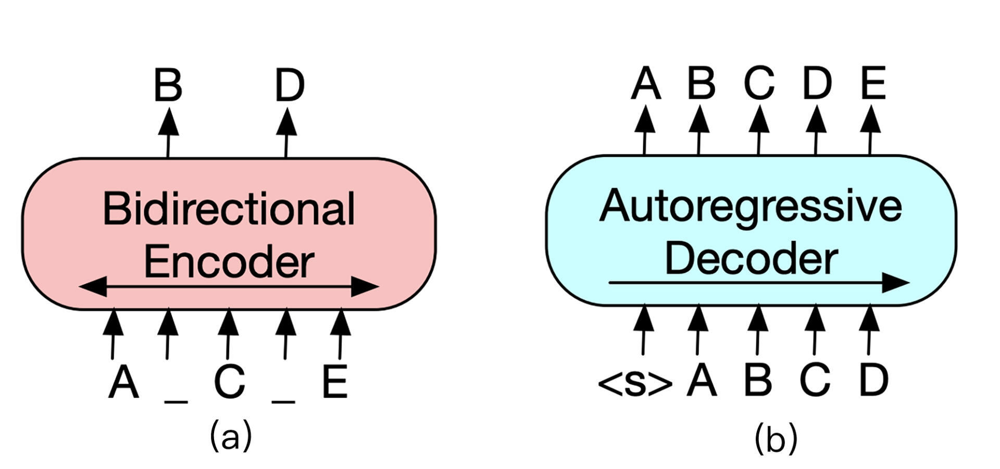
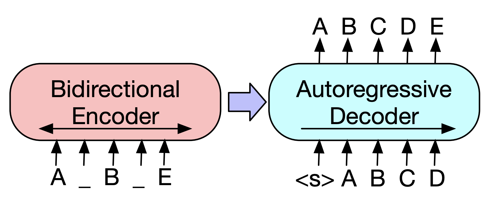

- 00 开篇词 如何高效入门PyTorch？.md.html
- 01 PyTorch：网红中的顶流明星.md.html
- 02 NumPy（上）：核心数据结构详解.md.html
- 03 NumPy（下）：深度学习中的常用操作.md.html
- 04 Tensor：PyTorch中最基础的计算单元.md.html
- 05 Tensor变形记：快速掌握Tensor切分、变形等方法.md.html
- 06 Torchvision（上）：数据读取，训练开始的第一步.md.html
- 07 Torchvision（中）：数据增强，让数据更加多样性.md.html
- 08 Torchvision（下）：其他有趣的功能.md.html
- 09 卷积（上）：如何用卷积为计算机“开天眼”？.md.html
- 10 卷积（下）：如何用卷积为计算机“开天眼”？.md.html
- 11 损失函数：如何帮助模型学会“自省”？.md.html
- 12 计算梯度：网络的前向与反向传播.md.html
- 13 优化方法：更新模型参数的方法.md.html
- 14 构建网络：一站式实现模型搭建与训练.md.html
- 15 可视化工具：如何实现训练的可视化监控？.md.html
- 16 分布式训练：如何加速你的模型训练？.md.html
- 17 图像分类（上）：图像分类原理与图像分类模型.md.html
- 18 图像分类（下）：如何构建一个图像分类模型_.md.html
- 19 图像分割（上）：详解图像分割原理与图像分割模型.md.html
- 20 图像分割（下）：如何构建一个图像分割模型？.md.html
- 21 NLP基础（上）：详解自然语言处理原理与常用算法.md.html
- 22 NLP基础（下）：详解语言模型与注意力机制.md.html
- 23 情感分析：如何使用LSTM进行情感分析？.md.html
- 24 文本分类：如何使用BERT构建文本分类模型？.md.html
- 25 摘要：如何快速实现自动文摘生成？.md.html
- 加餐 机器学习其实就那么几件事.md.html
- 用户故事 Tango：师傅领进门，修行在个人.md.html
- 答疑篇 思考题答案集锦.md.html
- 结束语 人生充满选择，选择与努力同样重要.md.html
- 捐赠
25 摘要：如何快速实现自动文摘生成？
你好，我是方远。
当我们打开某个新闻APP或者某个网站时，常常被这样的标题所吸引：“震惊了十亿人”、“一定要读完，跟你的生命有关！”等。但是当我们点进去却发现都是标题党，实际内容大相径庭！这时候你可能会想，如果有一种工具能帮助我们提炼文章的关键内容，那我们就不会再受到标题党的影响了。其实想要实现这个工具并不复杂，用自动文摘技术就能解决。
自动文摘充斥着我们生活的方方面面，它可用于热点新闻聚合、新闻推荐、语音播报、APP消息Push、智能写作等场景。今天我们要讲的这个自然语言处理任务，就是自动文摘生成。
问题背景
自动文摘技术，就是自动提炼出一些句子来概括整篇文章的大意，用户通过读摘要就可以了解到原文要表达的意思。
抽取与生成
自动文摘有两种解决方案：一种是抽取式（Extractive）的，就是从原文中提取一些关键的句子，组合成一篇摘要；另外一种是生成式（Abstractive）的，也是这节课我们重点要讲的内容，这种方式需要计算机通读原文后，在理解整篇文章内容的基础上，使用简短连贯的语言将原文的主要内容表达出来，即会产生原文中没有出现的词和句子。
现阶段，抽取式的摘要目前已经相对成熟，但是抽取质量及内容流畅度都不够理想。随着深度学习的研究，生成式摘要的质量和流畅度都有很大提升，但目前也受到原文本长度过长、抽取内容不佳等限制，生成的摘要与人工摘要相比，还有相当的差距。
语言的表达方式多种多样，机器生成的摘要可能和人工摘要并不相同，那么如何衡量自动摘要的好坏呢？这就涉及到摘要的评价指标。
评价指标
评价自动摘要的效果通常使用 ROUGE（Recall Oriented Understudy for Gisting Evaluation）评价。
ROUGE评价法参考了机器翻译自动评价方法，并且考虑了N-gram共同出现的程度。这个方法具体是这样设计的：首先由多个专家分别生成人工摘要，构成标准摘要集；然后对比系统生成的自动摘要与人工生成的标准摘要，通过统计二者之间重叠的基本单元（n元语法、词序或词对）的数目，来评价摘要的质量。通过与多专家人工摘要的对比，提高评价系统的稳定性和健壮性。
ROUGE主要包括以下4种评价指标：
1.ROUGE-N，基于n-gram的共现统计；- 2.ROUGE-L，基于最长公共子串；- 3.ROUGE-S，基于顺序词对统计；- 4.ROUGE-W，在ROUGE-L的基础上，考虑串的连续匹配。- 了解了自动文摘的种类与评价指标，下面我们再来认识一个用于自动文摘生成的模型——BART。它的名字和上节课讲过的BERT非常像，我们先来看看它有哪些特点。
BART原理与特点分析
BART的全称是Bidirectional and Auto-Regressive Transformers（双向自回归变压器）。它是由 Facebook AI 在2019年提出的一个新的预训练模型，结合了双向Transformer和自回归Transformer，在文本生成相关任务中达到了SOTA的结果。你可以通过这个链接查看相关论文。
我们已经熟知了论文《Attention is all you need》中提出的Transformer。Transformer左半边为Encoder，右半边为Decoder。Encoder和Decoder的结构分别如下图（a）、（b）所示。

Encoder负责将原始文本进行self-attention，并获得句子中每个词的词向量，最经典的 Encoder架构就是上节课所学习的BERT，但是单独Encoder结构不适用于文本生成任务。
Decoder的输入与输出之间错开一个位置，这是为了模拟文本生成时，不能让模型看到未来的词，这种方式称为Auto-Regressive（自回归）。例如GPT等基于Decoder结构的模型通常适用于做文本生成任务，但是无法学习双向的上下文语境信息。
BART模型就是将Encoder和Decoder结合在一起的一种sequence-to-sequence结构，它的主要结构如下图所示。

BART模型的结构看似与Transformer没什么不同，主要区别在于BART的预训练阶段。首先在Encoder端使用多种噪声对原始文本进行破坏，然后再使用Decoder 重建原始文本。
由于BART本身就是在sequence-to-sequence的基础上构建并且进行预训练，它天然就适合做序列生成的任务，例如：问答、文本摘要、机器翻译等。在生成任务上获得进步的同时，在一些文本理解类任务上它也可以取得很好的效果。
下面我们进入实战阶段，利用BART来实现自动文摘生成。
快速文摘生成
这里我们还是使用hugging face的Transformers工具包。具体的安装过程，上一节课已经介绍过了。
Transformers工具包为快速使用自动文摘生成模型提供了pipeline API。pipeline聚合了文本预处理步骤与训练好的自动文摘生成模型。利用Transformers的pipeline，我们只需短短几行代码，就可以快速生成文本摘要。
下面是一个使用pipeline生成文摘的例子，代码如下。
from transformers import pipeline
summarizer = pipeline("summarization")
ARTICLE = """ New York (CNN)When Liana Barrientos was 23 years old, she got married in Westchester County, New York.
A year later, she got married again in Westchester County, but to a different man and without divorcing her first husband.
Only 18 days after that marriage, she got hitched yet again. Then, Barrientos declared "I do" five more times, sometimes only within two weeks of each other.
In 2010, she married once more, this time in the Bronx. In an application for a marriage license, she stated it was her "first and only" marriage.
Barrientos, now 39, is facing two criminal counts of "offering a false instrument for filing in the first degree," referring to her false statements on the
2010 marriage license application, according to court documents.
Prosecutors said the marriages were part of an immigration scam.
On Friday, she pleaded not guilty at State Supreme Court in the Bronx, according to her attorney, Christopher Wright, who declined to comment further.
After leaving court, Barrientos was arrested and charged with theft of service and criminal trespass for allegedly sneaking into the New York subway through an emergency exit, said Detective
Annette Markowski, a police spokeswoman. In total, Barrientos has been married 10 times, with nine of her marriages occurring between 1999 and 2002.
All occurred either in Westchester County, Long Island, New Jersey or the Bronx. She is believed to still be married to four men, and at one time, she was married to eight men at once, prosecutors say.
Prosecutors said the immigration scam involved some of her husbands, who filed for permanent residence status shortly after the marriages.
Any divorces happened only after such filings were approved. It was unclear whether any of the men will be prosecuted.
The case was referred to the Bronx District Attorney\'s Office by Immigration and Customs Enforcement and the Department of Homeland Security\'s
Investigation Division. Seven of the men are from so-called "red-flagged" countries, including Egypt, Turkey, Georgia, Pakistan and Mali.
Her eighth husband, Rashid Rajput, was deported in 2006 to his native Pakistan after an investigation by the Joint Terrorism Task Force.
If convicted, Barrientos faces up to four years in prison. Her next court appearance is scheduled for May 18.
"""
print(summarizer(ARTICLE, max_length=130, min_length=30))
'''
输出:
[{'summary_text': ' Liana Barrientos, 39, is charged with two counts of "offering a false instrument for filing in
the first degree" In total, she has been married 10 times, with nine of her marriages occurring between 1999 and
2002 . At one time, she was married to eight men at once, prosecutors say .'}]
'''
第3行代码的作用是构建一个自动文摘的pipeline，pipeline会自动下载并缓存训练好的自动文摘生成模型。这个自动文摘生成模型是BART模型在CNN/Daily Mail数据集上训练得到的。
第5~22行代码是待生成摘要的文章原文。第24行代码是针对文摘原文自动生成文摘，其中参数max_length和min_length限制了文摘的最大和最小长度，输出的结果如上面代码注释所示。
如果你不想使用Transformers提供的预训练模型，而是想使用自己的模型或其它任意模型也很简单。具体代码如下。
from transformers import BartTokenizer, BartForConditionalGeneration
model = BartForConditionalGeneration.from_pretrained('facebook/bart-large-cnn')
tokenizer = BartTokenizer.from_pretrained('facebook/bart-large-cnn')
inputs = tokenizer([ARTICLE], max_length=1024, return_tensors='pt')
# 生成文摘
summary_ids = model.generate(inputs['input_ids'], max_length=130, early_stopping=True)
summary = tokenizer.decode(summary_ids[0], skip_special_tokens=True)
print(summary)
流程是一共包括四步，我们分别看一下。- 第一步是实例化一个BART的模型和分词器对象。BartForConditionalGeneration类是BART模型用于摘要生成的类，BartTokenizer是BART的分词器，它们都有from_pretrained()方法，可以加载预训练模型。
from_pretrained()函数需要传入一个字符串作为参数，这个字符串可以是本地模型的路径，也可以是上传到Hugging Face模型库中的模型名字。
这里“facebook/bart-large-cnn”是Facebook利用CNN/Daily Mail数据集训练的BART模型，模型具体细节你可以参考这里。
接下来是第二步，对原始文本进行分词。我们可以利用分词器对象tokenizer对原始文本ARTICLE进行分词，并得到词语id的Tensor。return_tensors=‘pt’表示返回值是PyTorch的Tensor。
第三步，使用generate()方法生成摘要。其中参数max_length限制了生成摘要的最大长度，early_stopping表示生成过程是否可提前停止。generate()方法的输出是摘要词语的id。
最后一步，利用分词器解码得到最终的摘要文本。利用tokenizer.decode()函数，将词语id转换为词语文本。其中参数skip_special_tokens表示是否去掉“ ”、”<\s>“等一些特殊token。
Fine-tuning BART
下面我们来看一看如何用自己的数据集来训练BART模型。
模型加载
模型加载部分和之前讲的一样，不再过多重复。这里我们要利用BartForConditionalGeneration类的from_pretrained()函数，加载一个BART模型。
模型加载的代码如下。这里我们会在Facebook训练好的摘要模型上，继续Fine-tuning。
from transformers import BartTokenizer, BartForConditionalGeneration
tokenizer = BartTokenizer.from_pretrained('facebook/bart-large-cnn')
model = BartForConditionalGeneration.from_pretrained('facebook/facebook/bart-large-cnn')
数据准备
接下来，是数据准备。我们先来回顾一下，之前学习过的读取文本数据集的方式。在第6课中，我们学习过使用PyTorch原生的的Dataset类读取数据集；在第23课中，我们学习了使用Torchtext工具torchtext.datasets来读取数据集。今天，我们还要学习一种新的数据读取工具：Datasets库。
Datasets库也是由hugging face团队开发的，旨在轻松访问与共享数据集。官方的文档在这里，有兴趣了解更多的同学可以去看看。
Datasets库的安装同样非常简单。可以使用pip安装：
pip install datasets
或使用conda进行安装：
conda install -c huggingface -c conda-forge datasets
Datasets库中同样包括常见数据集，而且帮我们封装好了读取数据集的操作。我们来看一个读取IMDB数据集（第23课讲过）的训练数据的示例：
import datasets
train_dataset = datasets.load_dataset("imdb", split="train")
print(train_dataset.column_names)
'''
输出：
['label', 'text']
'''
用load_dataset()函数来加载数据集，它的参数是数据集的名字或本地文件的路径，split参数用于指定加载训练集、测试集或验证集。
我们还可以从不止一个csv文件中加载数据：
data_files = {"train": "train.csv", "test": "test.csv"}
dataset = load_dataset("namespace/your_dataset_name", data_files=data_files)
print(datasets)
'''
示例输出：(实际输出与此不同)
{train: Dataset({
features: ['idx', 'text', 'summary'],
num_rows: 3668
})
test: Dataset({
features: ['idx', 'text', 'summary'],
num_rows: 1725
})
}
'''
通过参数data_files指定训练集、测试集或验证集所需加载的文件路径即可。- 我们可以使用map()函数来对数据集进行一些预处理操作，示例如下：
def add_prefix(example):
example['text'] = 'My sentence: ' + example['text']
return example
updated_dataset = dataset.map(add_prefix)
updated_dataset['train']['text'][:5]
'''
示例输出：
['My sentence: Amrozi accused his brother , whom he called " the witness " , of deliberately distorting his evidence .',
"My sentence: Yucaipa owned Dominick 's before selling the chain to Safeway in 1998 for $ 2.5 billion .",
'My sentence: They had published an advertisement on the Internet on June 10 , offering the cargo for sale , he added .',
'My sentence: Around 0335 GMT , Tab shares were up 19 cents , or 4.4 % , at A $ 4.56 , having earlier set a record high of A $ 4.57 .',
]
'''
我们首先定义了一个add_prefix()函数，其作用是为数据集的“text”字段加上一个前缀“My sentence: ”。然后调用数据集dataset的map方法，可以看到输出中“text”字段的内容前面都增加了指定前缀。
下面我们来看一看，使用自定义的数据集fine-tuning BART模型应该怎么做。具体的代码如下：
from transformers.modeling_bart import shift_tokens_right
dataset = ... # Datasets的对象，数据集需有'text'和'summary'字段，并包含训练集和验证集
def convert_to_features(example_batch):
input_encodings = tokenizer.batch_encode_plus(example_batch['text'], pad_to_max_length=True, max_length=1024, truncation=True))
target_encodings = tokenizer.batch_encode_plus(example_batch['summary'], pad_to_max_length=True, max_length=1024, truncation=True))
labels = target_encodings['input_ids']
decoder_input_ids = shift_tokens_right(labels, model.config.pad_token_id)
labels[labels[:, :] == model.config.pad_token_id] = -100
encodings = {
'input_ids': input_encodings['input_ids'],
'attention_mask': input_encodings['attention_mask'],
'decoder_input_ids': decoder_input_ids,
'labels': labels,
}
return encodings
dataset = dataset.map(convert_to_features, batched=True)
columns = ['input_ids', 'labels', 'decoder_input_ids','attention_mask',]
dataset.set_format(type='torch', columns=columns)
首先需要加载自定义的数据集，你要注意的是，这个数据集需要包含原文和摘要两个字段，并且包含训练集和验证集。加载数据集的方法可以用我们刚刚讲过的load_dataset()函数。
由于加载的数据需要经过一系列预处理操作，比如通过分词器进行分词等等的处理后，才能送入到模型中，因此我们需要定义一个函数convert_to_features()来处理原文和摘要文本。
convert_to_features()函数中的主要操作就是调用tokenizer来将文本转化为词语id。需要注意的是，代码第10行中有一个shift_tokens_right()函数，它的作用就是我们在原理中介绍过的Auto-Regressive，目的是将Decoder的输入向后移一个位置。
然后我们需要调用dataset.map()函数来对数据集进行预处理操作，参数batched=True表示支持在batch数据上操作。
最后再利用set_format()函数生成选择训练所需的数据字段，并生成PyTroch的Tensor。到这里，数据准备的工作就告一段落了。
模型训练
做好了前面的准备工作，最后我们来看模型训练部分。Transformers工具已经帮我们封装了用于训练文本生成模型的Seq2SeqTrainer类，无需我们自己再去定义损失函数与优化方法了。
具体的训练代码如下。
from transformers import Seq2SeqTrainingArguments, Seq2SeqTrainer
training_args = Seq2SeqTrainingArguments(
output_dir='./models/bart-summarizer',# 模型输出目录
num_train_epochs=1, # 训练轮数
per_device_train_batch_size=1, # 训练过程bach_size
per_device_eval_batch_size=1, # 评估过程bach_size
warmup_steps=500, # 学习率相关参数
weight_decay=0.01, # 学习率相关参数
logging_dir='./logs', # 日志目录
)
trainer = Seq2SeqTrainer(
model=model,
args=training_args,
train_dataset=dataset['train'],
eval_dataset=dataset['validation']
)
trainer.train()
首先我们要定义一个训练参数的对象，关于训练的相关参数都通过Seq2SeqTrainingArguments类进行定义。然后再实例化一个Seq2SeqTrainer类的对象，将模型和训练数据作为参数传入其中。最后调用train()方法，即可一键开始训练。
小结
恭喜你完成了今天的学习任务，同时也完成了PyTorch的全部学习内容。
这节课我们先一起了解了BART模型的原理与特点，这个模型是一个非常实用的预训练模型，能够帮助我们实现文本摘要生成。然后我们结合实例，学习了如何用PyTorch快速构建一个自动文摘生成项目，包括利用Transformers的pipeline快速生成文本摘要和Fine-tuning BART模型。
因为BART模型具有自回归Transformer的结构，所以它不只可以用于摘要生成，还适用于其它文本生成类的项目，例如机器翻译、对话生成等。相信理解了它的基本原理与模型Fine-tuning的基本流程，你可以很容易地利用BART完成文本生成类的任务，期待你举一反三，亲手做更多的实验。
通过实战篇的学习，我们一共探讨、实现了2个图像项目和3个自然语言处理项目。如何基于 PyTorch 搭建自己的深度学习网络，相信你已经了然于胸了。当我们解决实际的问题时，首先要从原理出发，选择适合的模型，PyTorch只是一个工具，辅助我们实现自己需要的网络。
除了自动摘要外，其他四个项目的共通思路都是把问题转化为分类问题。图像、文本分类不必细说，图像分割其实是判别一个像素是属于哪一个类别，情感分析则是判别文本是积极类还是消极类。而自动摘要则是生成模型，通常是基于sequence-to-sequence的结构来实现。
这些是我通过一系列的实战训练，最终希望你领会到的模型搭建思路。
思考题
自从2018年BERT被提出以来，获得了很大的成功，学术界陆续提出了各类相关模型，例如我们今天学习的BART。请你查一查还有哪些BERT系列的模型，并阅读相关论文，自行学习一下它们的原理与特点。
欢迎你在留言区和我交流互动，也推荐你把这节课转发给更多同事、朋友，跟他一起学习进步。
© 2019 - 2023 Liangliang Lee. Powered by gin and hexo-theme-book.